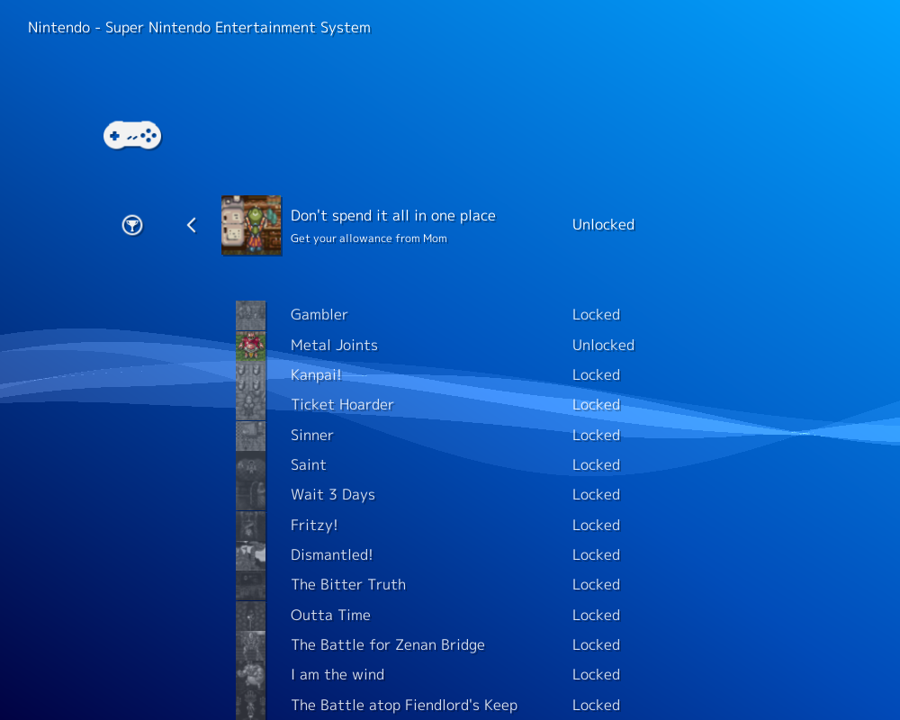

RetroAchievements In RetroArch
What are RetroAchievements?
retroachievements.org is a service that provides a trophies unlocking mechanism similar to modern consoles, for Retro games.
!!! Warning
The service is not maintained by RetroArch or the Libretro team.
!!! Note
If you want to contribute, please update RetroArch and cores to get the latest fixes on the RetroAchievements feature;
then in order to propose improvements to this document, do it via GitHub using "Pull Requests"
How to setup achievements
- Register an account on retroachievements.org (don't forget to confirm your account creation with the email they send to you).
- Open Retroarch and go to Settings->Achievements
- Enable the functionality and fill your retroachievements credentials
!!! note
The hardcore mode prevents you from using emulation features like savestates, slow motion and cheats.
BUT gives you double points.
Check your connection to the service
You need an active Internet connection.
In this example, we are using the game Chrono Trigger (USA) with the Snes9x core.
Launch the game and trigger the Quick Menu.
Go to Achievements and you should see a list of the unlockable trophies for this game.

Check your progress
On the retroachievements website, you can login and access your account page.
You should be able to check your progress in the games and see which trophies you unlocked.
Trophies unlocked in hardcore mode are marked with a special color.
You can also check the progress of your friends and add comments on their trophies.
Cores Compatibility
Arcade
| Core |
Supported |
Notes |
| FinalBurn Neo |
✔ |
AES bios is required for NeoGeo achievements. AES Asia is English. |
| MAME |
✕ |
|
Atari 2600
Atari 7800
Atari Lynx
Wonderswan / Wonderswan Color
ColecoVision
PC Engine / PC Engine CD
PC-8000 / PC-8800
| Core |
Supported |
Notes |
| QUASI88 |
✔ |
Some games may be difficult to play in Retroarch due to lack of complete keyboard access. Sets generally expect the MkIISR bios. |
Nintendo DS
Game Boy / Game Boy Color
Game Boy Advance
NES
Nintendo 64
Pokemon Mini
SNES
Virtual Boy
Master System / MegaDrive - Genesis
Sega 32X
| Core |
Supported |
Notes |
| Picodrive |
✔ |
Support is extremely variable. |
Game Gear
SG-1000
Sega CD
Sega Saturn
Neo Geo Pocket / Neo Geo Pocket Color
Sony Playstation